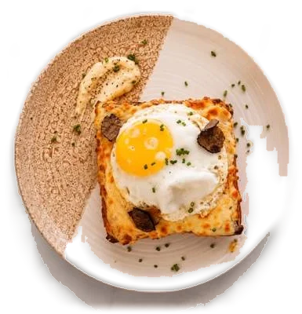
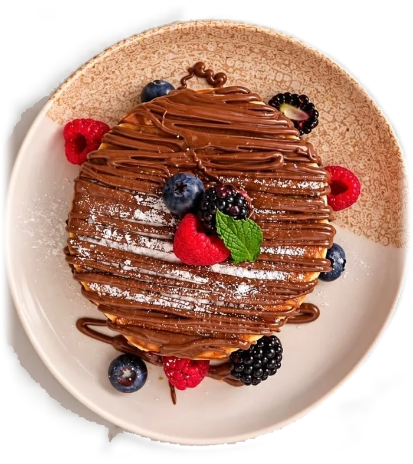
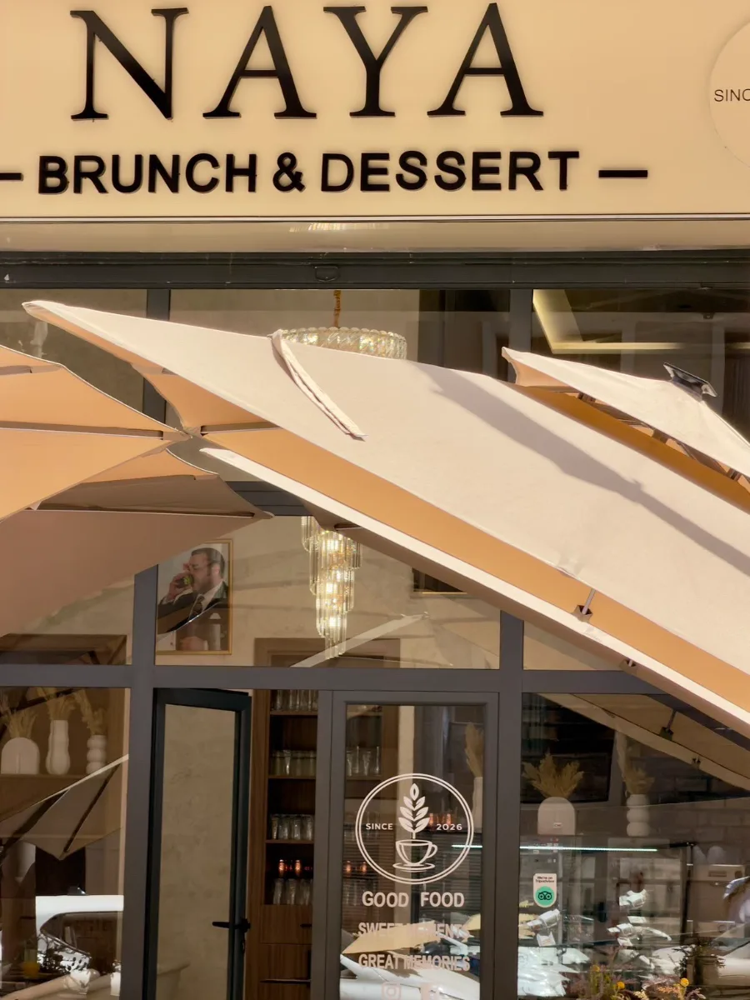
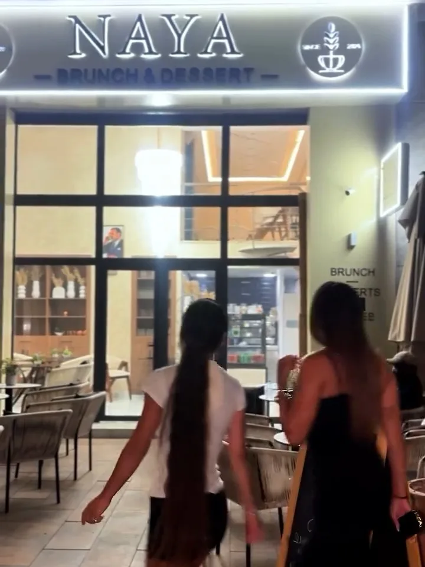

Brunch & Dessert
Brunch, brasserie et desserts faits maison, rue Hassania à Guéliz. Ouvert tous les jours, de 9 h à minuit.
- 4,7 sur Google, 50 avis
- Tous les jours, 9 h – minuit

Du sucré au salé, de 9 h à minuit
Brunch, plats de brasserie, desserts et boissons, servis tous les jours rue Hassania. Tout est fait maison, avec amour.

Le Beldi, le petit-déjeuner marocain
80 DH
La formule marocaine de NAYA : msemen, baghrir et harcha, une boisson froide et une boisson chaude.
- MsemenCrêpe feuilletée
- HarchaGalette de semoule
- BaghrirCrêpe aux mille trous
- À tartinerMiel, amlou, beurre, confiture de fraise et Nutella
Une boisson froide
Jus d’orange pressé ou citronnade
Une boisson chaude
Café, chocolat chaud ou thé à la menthe
La carte
Brunch, brasserie, desserts et boissons, avec les prix en dirhams. Touchez + pour ajouter un plat à votre table.
Carte et prix de NAYA en novembre 2026, susceptibles de changer.
Votre table
Ajoutez des plats et des boissons depuis la carte : votre table se compose ici, avec le total.
Votre table est encore vide.
Votre sélection
Total 0 DH
Total indicatif, calculé avec les prix de la carte.
Rue Hassania, en plein cœur de Guéliz
NAYA vous accueille en salle et en terrasse, tous les jours de 9 h à minuit.


- 7 jours sur 7De 9 h à minuit, sans interruption
- AccessibleEntrée, places, toilettes et parking adaptés aux fauteuils roulants
- LivraisonNAYA livre avec Glovo
Ce que disent nos clients
4,7
sur 5, d’après 50 avis Google
« Un grand merci à Nakim pour son accueil et son professionnalisme. Un lieu que je recommande vivement pour se régaler les papilles ! […] Tout était parfait »
« Meilleur brunch de Marrakech. Tout était super bon et de qualité. Le personnel est adorable et très aimable, avec un service 10/10. Je recommande à 100 %. Prix abordable »
« Super service, serveur hyper aimable et produit de qualité. C’est le meilleur restau de tout Marrakech foncé, les yeux fermés !! »
Questions fréquentes
Quels sont vos horaires ?
Nous sommes ouverts tous les jours, de 9 h à minuit.
Où se trouve NAYA ?
Rue Hassania, à Guéliz (Marrakech 40000). Le code plus Google est JXMR+WH Marrakech.
Peut-on se faire livrer ?
Oui, NAYA est sur Glovo. Vous pouvez commander depuis l’application ou le site de Glovo.
Le lieu est-il accessible en fauteuil roulant ?
Oui. L’entrée, les places assises, les toilettes et le parking sont adaptés aux fauteuils roulants.
Servez-vous un petit-déjeuner marocain ?
Oui, Le Beldi (80 DH) : msemen, baghrir et harcha, une boisson froide et une boisson chaude, avec miel, amlou, beurre, confiture de fraise et Nutella.
Les omelettes sont-elles servies avec une salade ?
Oui, toutes nos omelettes et brouillades d’œuf sont servies avec de la salade.
Comment vous contacter ?
Par téléphone au 07 15 47 92 27, ou sur Instagram @naya.marrakech.